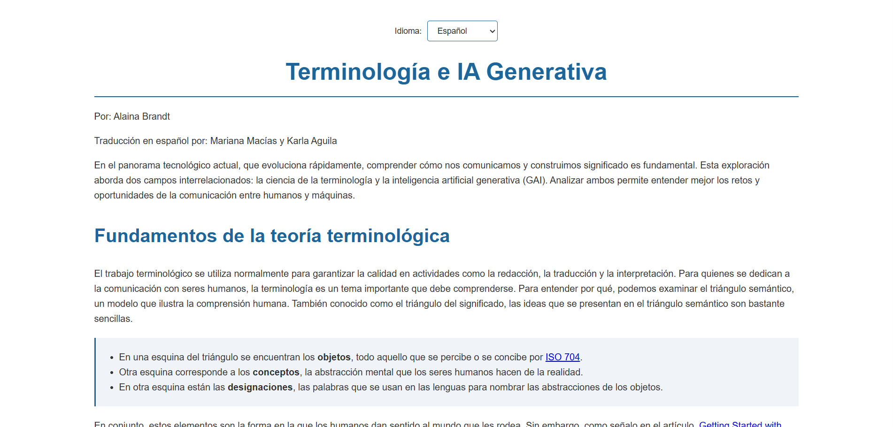

Mis Proyectos Destacados

Proyecto Página de Terminología
Localización completa de una página web técnica sobre IA generativa, del inglés estadounidense al español de México. Las tareas principales incluyeron la gestión de la expansión del texto (aproximadamente un 30 % más en español), la localización de cuestionarios interactivos basados en JavaScript y la adaptación cultural del contenido, todo ello manteniendo la estructura original en HTML y CSS.
Ver proyecto
Proyecto Competencias de Localización
Localización técnica de una aplicación web de autoevaluación. Localicé las cadenas de la interfaz mediante archivos JSON, adapté la lógica de puntuación en los archivos de configuración para el mercado mexicano y ajusté variables CSS para alinear el diseño visual con las expectativas profesionales de la región.
Ver proyecto
Proyecto de Blog en WordPress
Desarrollo de una entrada especializada para un blog en WordPress optimizada para SEO, tanto para buscadores tradicionales (como Google) como para modelos de lenguaje de gran escala (IA). El proyecto incluyó un análisis detallado del público objetivo, la integración estratégica de palabras clave para reducir la dificultad de posicionamiento y una estrategia de difusión multicanal para aumentar la interacción de los usuarios y la autoridad del sitio.
Ver proyecto
Proyecto de Localización Web: Python Patrol
Localización profesional de una página web sobre conservación ambiental al español de Miami (es-US). Utilicé herramientas TAO (OmegaT y SmartCAT) para gestionar memorias de traducción, localicé cadenas de JavaScript y realicé una auditoría completa de enlaces externos para garantizar una experiencia natural y coherente para la comunidad hispanohablante del sur de Florida.
Ver proyecto